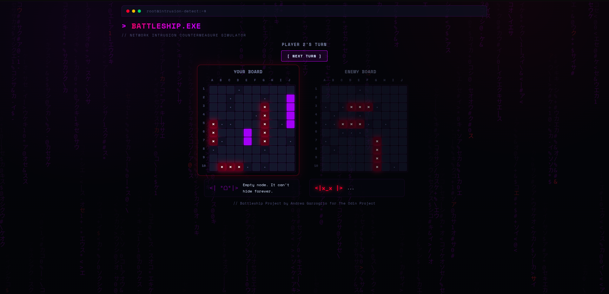
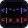

Battleship
Classic naval rules staged as a network intrusion. The game logic lives entirely apart from the DOM, so it could be built and tested before any interface existed, then wired up to three modes: against the computer, hotseat, or the computer playing itself.